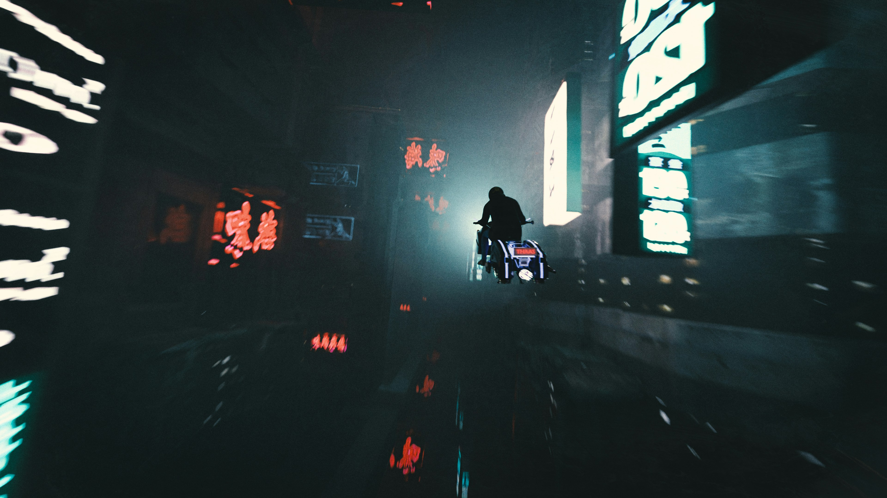

🇭🇰 香港完整攻略
资料整合 | 攻略 + 实用信息 | 2026年6月整理
🏙️ 三栋炮楼总览
香港有非常出名的三栋炮楼，整栋楼都是楼凤，坐电梯上顶楼然后走下去，总能找到你满意的楼凤，门上有写特点和价格的小纸片
注意事项：禁止拍照/进门不做也会收费/基本上都是快餐三十分钟/遇到警察不要怕，不抓嫖客
价格：
中国：400-600 港币
日韩：600-1000 港币
白女：800-1300 港币
av女优：1300 港币
谷歌坐标，【直接在谷歌地图上输入这个坐标即可，中间的逗号是英文的逗号】
富士大厦:22.2795, 114.1797
发利大厦：22.2985, 114.1739
建兴大厦：22.3194, 114.1709
每个大厦都有两百多个房间，你会像女人爱逛街一样，爱上逛这三栋大楼，细枝硕果马甲线的车模才600港币
白人女孩子会聚集在一个楼层
上午不要去，一般是下午两点开始营业
更新时间 2025年2月21日 这个信息长期有效
#香港 #楼凤 #快餐 #发利大厦 #富士大厦 #建兴大厦 #俄罗斯 #乌克兰 #韩国 #日本 #越南 #av女星
🏢 凤鸣大厦
凤鸣大厦
谷歌坐标：22.2782, 114.1840 【直接在谷歌地图上输入这个坐标即可，中间的逗号是英文的逗号】
今天介绍一下香港铜锣湾附近的凤鸣大厦 地址：香港銅鑼灣利園山道54-70號, Phoenix Apartments
这个大厦只有三楼和五楼有一些楼凤，门口挂着彩灯，大概有三四十个楼凤的样子，规模完全没法跟富士大厦/发利大厦/建兴大厦比，质量也没有另外三栋大厦好。
优点
1交通便利，楼下附近的商场有跨境大巴，可以直达深圳国际机场
2楼下附近有自主洗衣机
3二楼的青年旅店，坏境很好，两百港币左右一晚上
4可以步行前往三大楼之一的富士大厦
5上楼就有楼凤
6 附近有麦当劳
#香港 #楼凤 #富士大厦 #凤鸣大厦 #快餐
💆 福乐大厦 - 按摩大楼
今天给大家介绍一下香港的按摩大楼，福乐大厦。
谷歌坐标：22.3054, 114.1711
发利、建兴和富士主打的都是快餐，这栋大楼不一样，主打的是按摩，92/95/98都有，如果是92和95的房间，那么姑娘会在门上贴‘全套免问’，表明她们只做按摩，不能开大做全套。姑娘分布在3楼到15楼，整栋大楼有一百多个房间，日式nuru啊，泰式按摩啊，抓龙筋啊，寸止啊这些，你能想到的按摩在这里都能找到。价格的话，因为按摩项目的不同和时间长短的不同，差别很大，所以姑娘们都没在门上标价格，遇到想做的项目可以按门铃咨询一下，记下价格，然后继续扫楼，扫完整栋楼再根据自己写的备忘录做电梯回去找姑娘就好了
交通：坐地铁到佐敦站，从A口出来，右拐就是，从入口进来有一小段台阶，然后左转，再右转就能看到电梯了，电梯上顶楼，然后一层一层的扫下去。这个大楼的人不多，所以告诉你们怎么走，另外三栋大楼人山人海的，跟着人流走就是了
#香港 #按摩 #nuru #92 #95 #98 #佐敦 #福乐大厦
📍 上水 - 深圳隔壁
上水
谷歌坐标：22.5037, 114.1280 【直接在谷歌地图上输入这个坐标即可，中间的逗号是英文的逗号】
今天给大家介绍一下香港的上水
这个地方距离深圳非常的近，从罗湖口岸或者福田口岸过海关后，坐地铁，下一站就是上水。
在这里找楼凤需要借助141网站，根据141网站上面的姑娘信息，她们都集中在这片500米乘300米的区域。快餐价格在300到500之间，如果要加服务的话，请参照141网站上面女孩子的介绍界面。
总结
便宜
这里适合深圳的人来合法泄火。
不适合第一次来香港嫖娼的人，姑娘太少
#香港 #楼凤 #上水 #141网站 #深圳 #嫖娼 #快餐
🗺️ 三栋大楼异国姑娘分布
香港三栋大楼异国姑娘分布情况
富士大厦的异国姑娘常驻在低楼层，二楼三楼四楼都有，肯定有俄罗斯的，经常有韩国的，但是分布的楼层不固定
偶尔有其他冷门国家的，大部分都在低楼层。韩国，德国，法国，西班牙，澳大利亚，巴西，阿根廷，加拿大，哥伦比亚，这些不常见的国家，如果有一般都是在富士大厦落脚。
发力大厦：五楼，出了电梯右拐，再右拐，501巷子，常驻俄罗斯，二楼201巷常驻日本av女优，其他楼层零散分布东南亚姑娘。
建兴大厦：11楼，出了电梯左拐，11B巷，常驻俄罗斯，其他楼层零散分布有东南亚的姑娘
刷八国联军成就还是推荐大家住在凤鸣大楼二楼的青年旅馆，按照我图片上标记的路线走，绿色的线是过街天桥，沿途有中国银行，中国建设银行，汇丰银行，如果在大陆的银行账户开通了境外取款功能，方便取现金，下了过街天桥还有蜜雪冰城【如果买了两杯饮料，要塑料袋，收费1港币】，蜜雪冰城马路对面是麦当劳。可以全程步行，五六百米的距离。如果是住在其他地方坐地铁到铜锣湾，记得从C口出，C口挨着蜜雪冰城，不要按照谷歌导航的推荐口出，那个比较远。
发力大厦：这个大厦是人最多的大厦，如果是坐地铁到尖沙咀地铁站的话，从B2、A2、N2出来，出了地铁口一百五十米左右，日本姑娘我只在这个大楼看到过，201这段时间常驻有av女优，要一千三百港币，其他楼层也有零星分布着非av女优的日本姑娘，八百港币，但是不固定。
建兴大厦：这个大楼可以从深圳的罗湖口岸和皇岗口岸直接坐地铁过来，中间不用倒地铁，一路直达，坐到旺角东，步行五百米就到建兴大厦了【旺角东站我只走过一次，有点迷糊，具体怎么走欢迎师兄师弟们分享攻略】。如果是从凤鸣大厦过来的，就从D3口出。
福乐大楼：按摩大楼，累了可以来这里坐按摩，抓龙筋，寸止，nuru都有，坐地铁到佐敦，从A口出，右拐五米就是
香港坐地铁，认准地铁的颜色和方向，基本上就没问题了，上上下下坐自动扶梯的时候，注意站在右边，因为经常有人赶路，他们在自动扶梯上走都是走左边。
#香港 #八国联军 #洋妞 #毛妹 #Av女优 #俄罗斯 #发利大厦 #建兴大厦 #富士大厦 #凤鸣大厦 #福乐大厦 #快餐 #按摩 #半套 #nuru #抓龙筋 #nuru
🎖️ 八国联军成就
这个频道为什么第一个地点选择介绍香港呢？
因为《八国联军》成就，对一个男人，太有诱惑力了。一万港币都用不完，就能达成这个成就。
香港的发利大厦，建兴大厦和富士大厦，常年有外国性工作者营业，你可以轻松的集齐日本/俄罗斯/乌克兰/韩国，四个国家的女孩子，一次一千港币。
剩下的四个国家，可以选择低配版本的东南亚，越南/泰国/马来西亚/菲律宾，这样你的达成《八国联军》成就了。
如果你想要高配版本的《八国联军》成就，你可以借助141网站，查询其他欧美国家的女孩子，141网站是支持根据国家进行搜索的。或者你多去几次香港，可以在三栋大楼碰到其他国家的女孩子，我在三栋大楼，遇到过法国/德国/西班牙/澳大利亚/巴西/阿根廷/加拿大/美国/哈萨克斯坦的性工作者，但是她们人数不多，不像俄罗斯/乌克兰/日本/韩国这四个国家，经常能遇到。
你可以想象一下，在一个晚上，你跟一群好友，吃着烧烤，喝着啤酒，吹着牛逼，这个时候你跟他们说你达成了《八国联军》成就，他们会问你什么八国联军，你跟他们说你操过八个国家的女孩子，是不是很爽？
&&&&&&&&&&&&&&&&&
极限《八国联军》通关：如果你只是为了达成《八国联军》成就，不在乎体验性爱，体验女孩子肉体，那一天时间就够了，你需要控制射精，在你感觉快要射的时候，拔出来，穿衣服，付钱，走人，去下一个目标，从下午两点到晚上十一点，九个小时的时间，你控制好节奏的话，一天时间就可以达成《八国联军》成就了。
&&&&&&&&&&&&&&&&&
怎么进入香港？
第一种方法是你有港澳通行证，办理了签注，你可以进入香港，如果你的签注已经过期了，可以选择在深圳续签，深圳的出入境管理局有自助续签的机器，不排队的话，几分钟就办理好了。
另外一种方法就是，你有护照，在一两天内要从香港飞往其他国家，你已经预定了机票，给香港海关工作人员出示你要从香港飞往其他国家的机票，香港海关会允许你停留7天。或者你从国外飞往香港，给香港海关出示你的机票，香港海关也会允许你停留7天。
香港的地铁和巴士
香港的地铁是可以使用支付宝刷码乘坐的，巴士不是统一的，有的可以有的不可以，如果经常去香港的话，建议大家办理一个八达通，首次办理需要付两百港币，办理好以后里面有一百五十港币的余额，有了八达通，坐地铁，坐巴士，去自主洗衣房洗衣服都非常的方便。
住宿：
富士大厦附近，推荐凤鸣大厦二楼的青年旅店，注意他们家的门锁卡和床上充电卡是分开的，充电记得找前台要，他们家入住要收两百港币的押金。
发利大厦附近，推荐美丽都大厦的合意宾馆，网上预定后办理入住，不需要押金。
建兴大厦附近，马路对面的先施大厦，里面有很多宾馆，注意避开里面的青年旅馆就可以了，我在先施大厦住青年旅馆遇到过精神病人。
香港其他要注意的地方
不要在711或者其他便利店买水，特别的贵。要去那些药店买。
一些店铺可以接受支付宝或者微信支付，但是他们给的汇率是一比一，不划算，建议大家应急使用。
港币：可以在内地的时候，找银行预约兑换。
#香港 #楼凤 #洋马 #快餐 #八国联军
🌐 141网站
141网站：https://141go161.com/zh/
今天给大家介绍一下香港的141网站。
香港的楼凤是合法的，有的楼凤还会在报纸上打广告，所以自然的也催生出了专门显示楼凤信息的网站，这个网站就是141。如果你直接谷歌141网站会出来很多个搜索结果，我们认准维基百科给出的网址就可以了，如果哪一天我提供的这个网址失效了，大家同样去维基百科查找即可
特点
141网站一般是【不在楼凤聚集区的】性工作者发布信息，她们比较分散，不像三栋大楼那样集中
在这个网站上，你可以通过搜索，快速找到满足自己特定需求的性工作者
我就是在141网站上找到奶水女孩和肛交女孩
注意事项
一 避开网站上面的广东/内地
二 141网站上面的女孩子，一般都比三栋大厦的女孩子价格贵，以俄罗斯女孩为例，建兴大厦的俄罗斯女孩一般在800港币到1200港币之间，但是141网站上面普遍在1300港币以上了
三 注意过度美颜图片，可以查看一下网页里面有没有视频，或者是评论区里面其他客户拍摄的图片
四 在网站上面找到合适的女孩子后，一般都有联系方式和地址，地址可能是不精准的，比如标错了房间号码，你到楼下后女孩子会给你正确的房间号码
五 遇到不满意的，不要进房间，直接走，不要有来都来了的那种思想
六 通过141网站上面的电话号码或者WhatsApp联系女孩子，注意问一下是否招待大陆客户
#香港 #141网站 #161网站 #楼凤 #快餐
📖 香港术语指南
香港一些术语
Part 1 / #P1：一般就是指做"按摩"
Part 2 / #P2："打飞机" / 用口 / "nuru" 等不同方式的出火，就是不能做爱
Part 2.5 / P2.5 ：这个灰色，也就是标明只有P2的场，某些女可能会暗做P3，可能看人，可能看钱，可能看脸，切记不能强求。
Part 3 / #P3：做爱
半套： P1+P2，也就是按摩+打飞机/不同方式达到出水为目标，总之就是不能做爱
#全套：P1 + P2 + P3，总之可以做爱（有的店家会跳过按摩）
#指壓三味：其实即是全套。洗澡，吹箫，做爱（简称洗吹做））
指壓四味：洗澡，#吹箫，#毒龙钻（通常都是）+做爱
"企企 / 企街" ：（200-300約） 站街女
"1仔" / "141" ：（約400-450）
一般都是旧楼、堂楼上有，楼下通常有红光灯，上到约好的房间，按钟开门发觉不是你想见的人就走人（或者礼貌地讲不对），遇到想见的人就入门,,如果多人排队..等一等就好了。
指壓 / 指仔：（約430-450）
在限定时间里任玩，一般都是中女多。
#神房 / #神秘房 ：（約500 - 800）
以前定义的是1楼1，一般以熟人介绍才会做你生意，价钱大约在600左右。
#樓上骨 / #USB ：（約600-900）看介绍
通常就是P1 + P2，部份有 P3
#Spa：（约500-1500）有部份陀地场标价3000
正统的Spa，是指利用水结合沐浴、按摩、涂抹保养品和香熏来促进新陈代谢，满足人体视觉、味觉、触觉、嗅觉和思考达到一种身心畅快嘅享受。
后来香引入Spa水疗，将大部份服务减去，以P1、P2为主，手推、Body，再有后来加入 "Nuru" "磨棍"，直到后来加入P3。
HG / Hotel Girl / 酒店女：（约800-3000）
要预约，一般要上酒店，地方可能会干净，但是会贵，有机会调包女孩子，如果发现真是调包你可以不入门，但需要跟介绍人一下，交代原因，否则你可能被拉入黑名单
#快餐：洗吹做服务 有时间限制
#車牌：接吻，所分级别有碰碰車》小車》中車》大車》坦克車 等。
車牌自考：代表女孩子不一定会让你亲，一般都是看长相，或者对你有没有感觉。
中超：隆胸，不过现在有分：
• “高科技”比真球的观感、手感更加完美。
• “中科技”会有一点瑕疵能看出来而已。
格手 / 葉問：如果你有进一步的肢体动作，例如握球、舔球、摸阴等，她会用手挡住或改变姿势，让你无法再进一步。
起機 / #HJ / 打丁：打飞机
口交 / BJ / 吹簫：口交
開大 / P3 ：做爱
環保：不戴套
環吹：不戴套吹
環屌：不戴套，做爱
波推：用胸在你身上游走。
夾腸：姑娘用胸夹你的下面。
股推 / 素股 / 蘿柚推：姑娘用屁股磨JJ
磨棍：姑娘用下体磨蹭JJ
腳交：姑娘用双脚让你射
口爆/KB：射在姑娘口中
毒龍鑽：姑娘用舌头舔你屎眼
冰火：姑娘用冰或薄荷、热水交替为你口交
漫遊：姑娘用舌头舔你的背部
雙飛：兩女共侍一夫
RPP/蘭花聖手：也就是挠屁股，意思是用手指让你全身发痒，特别集中在臀部附近
69 ：男女前后上下、头尾倒置为对方口交，也就是**“69”体位**
Body Massage/BM：姑娘用身体，特别是胸部，替你按摩
泡泡洗體：也就是把润滑液换成泡沫水，其他大致相同。
Nuru：日式Nuru按摩，就是在身上涂满一种特别的 Nuru 润滑液，磨到你射。也就是在成人电影中，经常被风俗娘用来做 Body Massage (BM) 的那种液体。
放飛箏：一种独特的打飞机方式
包膠/報告：赛后报告，是大哥们释放后写的心得和感想。
潮吹：姑娘高潮喷出的无色无味液体。
男潮吹：一般是男人射精过后，对方仍然会用独特的手法不断继续刺激男人的龟头，使其进入第二次兴奋，再喷出/射出无色无味的液体
幼幼：一般定义为20岁或以下的姑娘
DM ：Drop Money 丢钱了
DJ / 捽碟 ： 简单来说，就是用手指不断来回抚弄女性下体，导致对方出水（视乎女性状态）
#香港 #术语
📋 新手扫楼12条
基础信息
带够港币现金，前往目的地后上楼观看女孩子，选好以后询问价钱，无问题即可进入房间。
服务包括：30分钟内，洗、吹、做。超出30分钟仍未完事，可选择加钟（30分钟），否则请穿着好衣服离开。超出30分钟仍未离开，默认加钟。
价钱：大陆妹 / 洋马 或
建议：选大陆妹带 ，选洋马带 ，有多无少。
只收港币现金。
为什么是一楼一？
一楼一向来以安全、物美价廉著称，只需 400-1000 港币即可品尝世界各地。越南、泰国的亚洲风情，欧美金发碧眼的大洋马，都可以在凤楼里找到。
香港法例 200 章 117 条明确规定：任何处所由超过二人主要用以卖淫用途即可被视为卖淫场所。一男一女在一个房间里，游客不会有任何法律风险。
扫楼12条注意事项
- 请乘坐电梯到顶楼，再一路走下来，这样比较节省体力。
- 门上挂有「欢迎光临」或「请按钟」等字样的，请大胆按下门铃。挂有「请勿打扰」或「请稍后」的不要按。
- 开门之后请先确认价格，如果进了门又后悔了，有的可能会收取 200-300 不等的费用。
- 仔细确认她们的身材，尤其是东南亚国籍的，会存在人妖（放音乐很大声的很有可能是妖）。
- 礼貌有序的排队按铃，不要争抢，不要在楼道中伫立等待造成堵塞。
- 欧洲 800-1000 HKD，内地 500-600 HKD，东南亚 400-500 HKD。
- 最佳入场时间建议在下午 2 点后进楼，大部分姑娘刚开始营业，状态比较好，楼里人也比较少。
- 部分姑娘有增值服务：制服丝袜、无套口、加钟、按摩等，明码标价。
- 洋马普遍在同一层里，态度千差万别，建议选择对你笑的。
- 不要害羞按门铃也不要害羞问价格，不合适说声谢谢转身离开就可以了。
- 不要急着做选择，遇到还不错的先记下门牌号，整栋看完后再回头挑选。
- 按门铃或在楼道里穿行时，尽量不要举着手机，会被误认为是偷拍。
🏢 发利大厦实战
地址：地铁尖沙咀站 A2 出口，香港油尖旺区加拿芬道 33-35 号。
观光楼层：2-8 楼，整栋楼都是。每层楼大概 20-30 户，工作室超多。二楼有不少东南亚菜馆，可以吃到印尼菜、泰国菜、马来西亚菜，价格实惠。
发利大厦有 320 个房间，选择多，性价比高，质量个人认为是目前香港最强。
扫楼
坐电梯到顶楼 8 楼，然后一层一层爬楼梯往下逛。每层楼大概十多个房间。看到房门牌子写着「请按钟」或「欢迎光临」，就大胆按门铃。优质餐馆通常很受欢迎，一次只接待一个客户，看到想吃的就赶紧出手。扫楼过程中看到不错的一定要记下来。
常见问题
- 价格：中餐馆 500-600 HKD，东南亚馆 400-500 HKD，西餐厅 800-1000 HKD
- 不可以讲价
- 先就餐后付费，给港币现金（部分西餐厅要求先付费）
- 营业时间：早上 11 点到晚上 12 点（建议下午 2 点去，大部分凤姐这个时候开工，部分营业至凌晨 2 点）
- 敲门随意，进门要非常慎重。一旦进门无论是否就餐都必须给部分或全部费用（200-700 港币）
- 不可拍照，不可偷拍
🏢 建兴大厦实战
地址：地铁旺角站 E2 出口，香港油尖旺区亚皆老街 52-54 号。
观光楼层：5-9，11-14 楼。每层楼大概 10-20 个工作室。建兴大厦有不少俄罗斯、乌克兰西餐厅。喜欢吃西餐的单身狗一定不要错过。
洋马在 11 楼、10 楼、5 楼。
发利和建兴这两栋楼可以说是世界各地嫖客的朝圣地。质量排名：发利 ＞ 富士 ＞ 建兴。建兴环境较烂，质量一般，适合淘宝，价格便宜（很多 400 的）。
常见问题
- 价格：中餐馆 500-600 HKD，东南亚馆 400-500 HKD，西餐厅 800-1000 HKD
- 不可以讲价
- 先就餐后付费，给港币现金
- 营业时间：早上 11 点到晚上 12 点
- 不可拍照，不可偷拍
- 建兴从旺角站出来走 500 米就到
- 富士大厦从铜锣湾出来，过街天桥沿著走，旁边有蜜雪冰城
- 凤鸣大厦在铜锣湾，可以步行到富士
🚶 庙街企街攻略
庙街是香港著名的旅游景点，有很多小姐姐，一般穿着性感站在楼下。大家可以一边逛一边挑选。
注意：庙街的小姐姐不能主动问价，因为属于公共场所，属于违法行为。为防止女阿 sir 钓鱼，请不要主动开口，让小姐姐开口，或者跟她上楼，进了楼道再问价。
庙街项目没有洗澡，上去就是擦一下就开始，价格相对较低。有洁癖的帅哥可以洗洗再去。时间也是 30 分钟左右，可以加钱加项目。
庙街攻略完整版：https://t.me/hk141bbc/891
💡 香港游玩贴士
港币问题：香港现金为主，去银行换好也行，口岸换也行。市区小巷子换比较优惠。多带现金，人民币现金也可以。西九龙尖沙咀附近换也可以，不要到港岛换（基本 1:1）。银联卡需开通境外取现功能。
流量问题：可以在口岸买一日卡/七日卡，也可提前在拼多多和淘宝上买。不用实名，插进去激活即可，无限流量。
充电器转换头：可拼多多购买，4 块钱包邮。香港没有充电的地方，带够一个 2-3 万毫安的充电宝很有必要。
交通：可以办理八达通，200 块钱可用余额 150，也可某宝提前购买。还可以支付饭钱。也可使用支付宝乘车。
省钱方案：深圳出发：罗湖过关-地铁到旺角东-步行到建兴；皇岗过关-福田-地铁到旺角东-步行到建兴；深圳湾过关-地铁到佐敦站-步行到福乐大厦。
🌈 TS / 人妖专区
香港一楼一里有明显的「TS 专楼/专层」（如某些大厦的特定楼层），很多 TS（大多泰国/菲律宾/印尼/马来背景）会用「新加坡模特」「车模」「高挑女神」「混血」等噱头宣传。
- 177cm 正是 TS 常见身高（原生男性骨架 + 荷尔蒙/手术后高挑）。
- 正是 TS 常见低价位（部分新来或生意差的会压到 400-600），用来吸引贪便宜或想试 TS 但怕贵的客人。
- 放音乐很大声的很有可能是妖。
- 仔细确认身材，尤其是东南亚国籍的。
🚶 站街新手攻略
站街定义：站街女，指的是在街上找客人的，分为「七日鲜」和本地自己做的，通常是四处走动或者站在某处，看中合适的就问价钱然后上楼。
价格： - （老站街女可能一百多也有交易）
基本服务：纯 ML（一般不洗澡）
地点：庙街、观塘、元朗、北角、油麻地、荃湾
找站街流程
- 看到合适的女孩，打眼色，对方一般会用手势表示价格，没有的话上到房间再问，或者跟着上楼梯后问。
- 合适就跟上楼。有时女孩子站的位置和工作室可能要走一段路。
- 各自脱衣服。大部分站街没有浴室洗澡，但会用湿纸巾擦。
- 有些女孩会免费套吹几下不加钱，有些会叫加 -，没有就手冲到硬带套，而有些女孩即使不硬也不会帮你手冲，自己看着办。
- 做爱，预期不会很久（5-15分钟），就算是无限时间的女孩也想快点下楼做下一个。叫鸡抓球换姿势是理所当然的，叫你加钱的是骗你，但有时间限制，自己衡量怎么换。
- 摘套擦拭，一般用纸巾，好一点会给湿纸巾，更幸运的话有洗手盘或者可以让你进厕所用水洗，但正常不提供毛巾。
- 穿衣服回家，下楼（女孩可能先走你）。
各地区地点名词
老庙（庙街）：G宝、肉档、凉茶、B位、光头、假人、咖喱、串烧、吉野、邮筒、马会、楼上泰、大ok、生果（小巴站）、细OK、北海、牌头、平安
价格：-280
油麻地：得如、中港、翠华、美心、登打士宾馆、日本城、三荤饭、咸公、果栏、窝打老道7仔
价格：通常
观塘：康宁圈、借钱兄弟、巷仔、乐昌、街市、金桥、仁安、小巴站
价格：通常 （DLC有时会贵些）
元朗：同学、金华、小巴站、鸿运、邮局、交通银行、东堤、垃圾站、水车馆、宝石、谷亭
价格：通常 -250
新手温馨提示：
如何分辨站街还是良家妇女：走到女女附近你看她，她会看回你，有些会打眼色有些会开口问你去不去。如果不开口又看不出是不是站街的，可以等其他师兄上完下来你再去问。不要招惹错良家妇女，不然被女阿sir抓了就活该（在街上问人价钱绝对可能被控游荡或行为不检等）。
如果女孩不看你，要么她根本不是站街的，要么她怕你是好人不想做你。正常站街附近很多时候都有其他师兄盯女孩。要知道如果是阿sir师姐放蛇的，她不能主动招惹人也不会先开口，想安全就等其他师兄上。
小心财物：有些女孩会假装站街，进了房可能会叫你脱衣冲凉好好服侍又帮你按摩，但记得，就算看着那个女孩，也可能会出现另一个人偷你的钱包。把钱包贵重物品放自己看得见的位置。去叫鸡就把金链子摘了，别傻了，万一自己掉了又怪鸡。
📓 扫街日记 · 香港实战篇
📓
扫街日记 · 香港实战篇
一楼一凤简称 141（one for one），在香港不违法，各国都有：东南亚、各种斯坦、欧洲，可以体验异国风情。服务就是洗吹做半个小时，偏 KC 性质，多数戴 T 吹。
香港主要的楼就是建兴和发利。10 点开始上人，两点差不多到齐。坐电梯到顶层往下一层层扫，门口有牌子挂着「在上钟」或「请按铃」，没上钟的大胆挨个按。不用担心第二次按被骂，人家一天开无数次门记不住你。
发利大厦：尖沙咀，共 8 层，每层房间很多，妹子数量远超富士，质量整体比富士强，各国批汇集最全。价格：内地 600-700，泰国越南 400-500，白人 1000。推荐泰国妹妹，脸微整但精致，胸硬但态度好，500 裸口，在 305E。
建兴大厦：尖沙咀地铁到旺角，共 14 层，环境很烂，质量一般，适合淘宝，价格便宜，很多 400 的，质量高的少。洋马也明显比发利的丑一些。
质量排名：发利 ＞ 富士 ＞ 建兴
一日扫楼路线参考：
福田口岸 → 小巴 B1 到元朗转 968 直达铜锣湾 → 逛富士 → 地铁到尖沙咀逛发利 → 最后旺角建兴 → 旺角东坐东铁线回深圳。三个楼都在地铁附近，一天扫完可行。
📓 扫街日记 · 香港实战篇
一楼一凤简称 141（one for one），在香港不违法，各国都有：东南亚、各种斯坦、欧洲，可以体验异国风情。服务就是洗吹做半个小时，偏 KC 性质，多数戴 T 吹。
香港主要的楼就是建兴和发利。10 点开始上人，两点差不多到齐。坐电梯到顶层往下一层层扫，门口有牌子挂着「在上钟」或「请按铃」，没上钟的大胆挨个按。不用担心第二次按被骂，人家一天开无数次门记不住你。
发利大厦
尖沙咀，共 8 层，每层房间很多，妹子数量远超富士，质量整体比富士强，各国批汇集最全。价格：内地 600-700，泰国越南 400-500，白人 1000。推荐泰国妹妹，脸微整但精致，胸硬但态度好，500 裸口，在 305E。
建兴大厦
尖沙咀地铁到旺角，共 14 层，环境很烂，质量一般，适合淘宝，价格便宜，很多 400 的，质量高的少。洋马也明显比发利的丑一些。
质量排名：发利 ＞ 富士 ＞ 建兴
一日扫楼路线参考
福田口岸 → 小巴 B1 到元朗转 968 直达铜锣湾 → 逛富士 → 地铁到尖沙咀逛发利 → 最后旺角建兴 → 旺角东坐东铁线回深圳。三个楼都在地铁附近，一天扫完可行。

— S P O N S O R —
探索未知领域
解锁更多暗黑体验
立即探索
↑